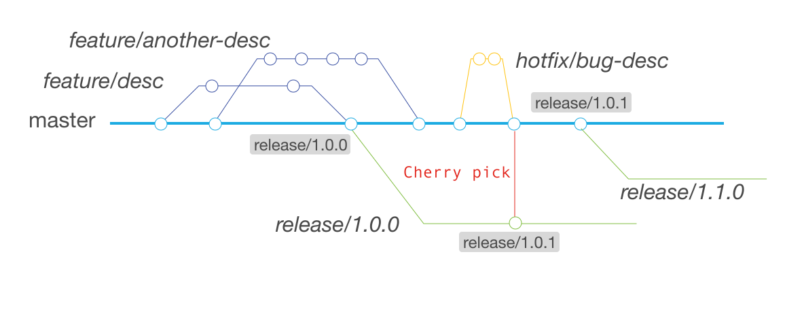

Repository workflows
0.1 Purpose
The purpose of this section is to outline the workflow and guidelines for contributing code to this repository.
0.2 Principles
Our principles are a set of fundamental guidelines that are meant to inform and streamline collaboration efforts. All our standardization decisions are based on the following principles:
Enhance the developer experience. Standards ultimate goal is to create a pleasant development experience.
Provide management key information. Workflows should enable management to tackle inefficiencies, pain points and increase output.
Aim for simplicity. If there are different options, we should aim for the simplest one.
In order to achieve these principles, Github is the main tool we use to track and manage product development related tasks, from requirements gathering to production release.
1 Source code management
1.1 Branch strategy
Branching in each repository will follow a trunk-based model. This model involves one eternal “trunk” called main from which all other branches originate.
All proposed changes or development work will take place on separate branches and will be merged into main via pull requests upon mandatory review/approval.
The goal of this approach is to have a highly stable codebase that is releasable on demand at all times.
The additional branches will be created for each feature, release, or hotfix. Each of these branches will have specific purposes and follow strict rules as to how they should be used. At a high level, the branching rules are described as follows:
| Branch type | Branch from | Merge to | Naming convention | Example |
|---|---|---|---|---|
| feature | main | main | feature/<desc> |
feature/my-feature |
| fix | main | main | feature/<desc> |
feature/my-feature |
| release | main | - | v<semver> |
v1.0.0 |
| hotfix | main | main, release | hotfix/<desc> |
hotfix/my-fix |
The purpose and correct usage of each supporting branch is elaborated in the following sub-sections. The graphic below can be used as an example of a complete workflow involving all branch types.

1.1.1 Feature branches
For each new feature, or for updates to a given feature, a separate branch will be created. Feature branches must originate from the main branch. Since no development takes place on the main branch, feature branches are expected to be the most common type of branch.
However, these branches should be short-lived. They will exist only as long as the feature is under development and never longer than a sprint. Ideally, a feature branch should involve one developer over a few (1-3) days of work.
Product backlog items (issues) should be defined with this in mind — if work on a feature is taking too long, then the item needs to be scoped differently (see the section on Delivery).
Once a feature branch is merged into main via pull request, it should be deleted. Any future work, even if it is related, will require a new branch.
Whenever a feature branch is created, where possible, it should be related to an existing issue. Whereas issues will be tagged with the classification (bug, enhancement, etc), the naming of the feature branches is more free.
1.1.2 Release branches
Release branches will be created for each version of the source that is destined for production release. This enables all preparation work for an upcoming release to take place even while development work for future releases is committed to the main.
The creation of a release branch will always correspond to an upcoming deployment. Since the main branch has a high standard of stability, it should be rare that further development work is needed to refine a release for production. If such a need arises, it will follow the hotfix strategy defined below.
Release branches never merge back into the trunk. A release branch should be representative of a release at a given point in time. There is no mandatory end of life for a release branch. These branches can exist indefinitely, as marker in release history and for potential rollback should the need arise.
Release branches follow the semantic version naming convention (i.e 1.0.0, 1.1.0). When a release branch is created it is also tagged with the same name.
1.1.3 Hotfix branches
Hotfixes are small changes that need to be released to production more quickly (e.g. due to the severity of the issue). As with release and feature branches, they should always originate from main.
Upon completion of the work, a hotfix branch will be merged into main. If the hotfix is also required in a release branch to be brought to production immediately, the change can be cherry-picked upon being merged into main. If no current release branch exists, one should be created for this purpose.
Once the corresponding pull requests complete, the temporary hotfix branch should be removed.
Whenever there is a hotfix merged into a release branch, the commit that includes the fix shall be tagged updating the PATCH number, for instance, changing from 1.0.0 to 1.0.1.
This approach allows to provide long term support to a particular version.
1.2 Pull requests and commits (PR)
The merging of supporting branches (feature and hotfix) into the main branch will always require a pull request.
Pull requests should include a reference to the issue numbers either in the commit or in the description of the PR. in the commit comment, using the following convention (where 0000 is the issue number and <comments> is placeholder for any optional comments).
<comments> #0000 <comments> Using comments like this will ensure that the pull request is automatically linked to all related issues.
When submitting a pull request ensure:
Well-formatted code*: Ensure that the committed code adheres to established coding standards and is well-formatted. Consistent indentation, proper naming conventions, and clean formatting improve code readability and maintainability.
No debugging or temporary code: Avoid including debugging statements, temporary code, or commented-out blocks. These can clutter the codebase and make it harder for others to understand and maintain the code.
Avoid unrelated changes: The PR should focus on a specific feature. Avoid including unrelated changes in a single commit. If you have multiple unrelated changes, consider creating separate PR for each change.
No Sensitive information: Ensure that commits do not include any sensitive information like passwords, secrets, API keys, or personal data. Such information should be securely managed outside of the code repository.
Consistency: Maintain a consistent style and structure throughout the project. Consistency helps establish good coding practices and makes it easier for the team to understand and collaborate on the codebase.
Documentation update: Ensure that the code, scripts, documentation and README files are up to date.
Commit messages shall help the reviewer to understand what changes have been introduced. These are properties that commits shall have:
Atomicity: Commits should be atomic, meaning they should represent a single logical change. It’s best to keep each commit focused on a specific task within the PR. This allows for easier code review, debugging, and reverting if necessary.
Clarity and descriptive messages: Commit messages should be clear, descriptive, and concise. They should summarize the purpose and content of the commit. A good commit message helps others understand the changes at a glance and provides context for future reference.
Example. Too generic not descriptive message ``` ❌ Avoid Updates Readme
✅ Better Add CONTRIBUTING link to Readme ```
Logical progression: Commits should follow a logical progression, building upon previous commits. Each commit should leave the codebase in a stable and working state, ensuring that others can pull changes without introducing errors.
1.2.1 Approvals
Completion of pull requests on main is generally restricted to designated approvers. The job of the approvers is to diligently review all code being merged to main to ensure the utmost stability of that branch.
Reviewers shall ensure the quality of the code, style and documentation. They shall ensure that it follows the best practices of the commits and pull requests exposed in this section.
Their aim should be to maintain a release-ready main branch at all times.